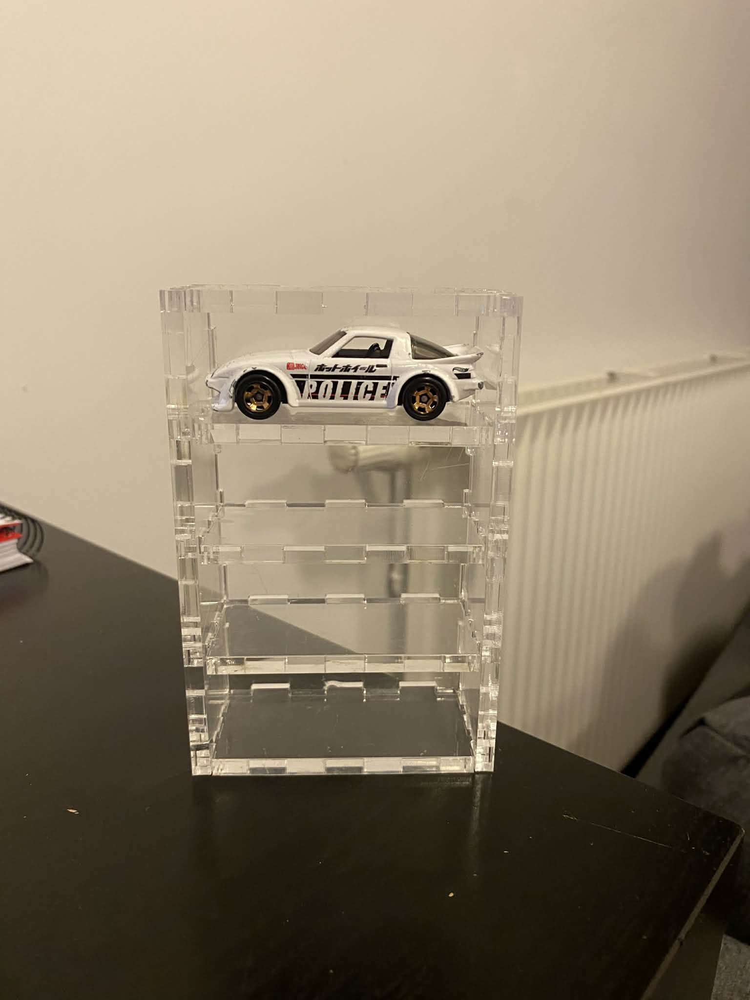
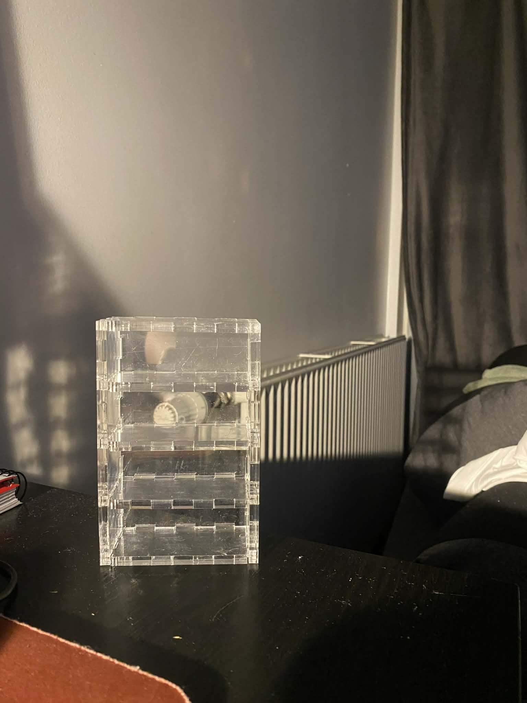

Fyrstu skref
Til að byrja á verkefninu byrjaði ég að horfa á myndbönd frá kennara, síðan fór ég að skoða fyrri verkefni nemanda
til að sjá hvað þau gerðu og hvernig þau leystu þau. Eftir það fór ég að hugsa hvað ég vildi gera, ég sá
strax að það yrði gaman að hafa saman þema í verkefni 2 og 3 og fékk ég því hugmynd að vinna með Hot Wheels bíla þar sem
ég get hannað marga hluti í kringum þá.
Vínylskurður
Fyrsta sem ég vildi gera var að vínilskera og til að byrja á þemanu ákvað ég að skera út Hot Wheels merkið.
Ég byrjaði á því að downloada Inkscape og horfa á
myndband
til að læra aðeins á forritið.
Síðan fann ég mynd af merkinu
á netinu og setti hana inn í Inkscape.
Ég lék mér svo í smá tíma að stilla myndina, síðan græjaði ég hana eins og að setja line thickness í 0,02 þannig að hún væri tilbúin fyrir vínilskerann.
Þegar það var komið gat ég sett skránna á USB-lykil og fór með hann í vélina.
Það var frekar einfalt að læra á Roland GS-24 og stilla hana, eins og að setja efnið í vélina.
Ég valdi rautt efni. Fyrir prentun passaði ég að stilla myndina þannig að skurðurinn myndi sóa
sem minnstu efni og endaði með að skera út mynd sem var 220 × 50 mm.
Þetta gekk allt vel og ég setti límmiðann strax á tölvuna mína.
Hönnun paramerrískt módels
Fyrir pressfit módelið langaði mig að gera Hot Wheels hillu fyrir bílana mína. Ég byrjaði á því að mæla Hot Wheels bíl til
að átta mig á hvaða stærðir hillan þyrfti að vera og fór síðan að hanna hana. Ég notaði Fusion og horfði á
myndband
til að hjálpa mér að teikna hilluna.
Upphaflega ætlaði ég að hafa hilluna þannig að bílarnir sneru fram og væru á ská í hillunni. Ég náði hins vegar ekki alveg
að teikna það eins og ég vildi né sjá fyrir mér hvernig ég myndi festa hana saman. Þess vegna ákvað ég að einfalda hönnunina
og gera hillu sem heldur fjórum bílum í einu þar sem bílarnir liggja láréttir á hlið.
Ég þurfti að gera nokkrar útgáfur af hönnuninni því ég klúðraði stundum einhverju eða var ekki alveg sáttur við niðurstöðuna.
Ég prófaði líka að hanna hilluna með mismunandi festingum, en það gekk ekki alveg upp með þessa hönnun. Á endanum endaði ég því með að láta
alla hilluna smella saman með finger joints.
Hér má sjá teikningu af hillunni í Fusion:
Til að auðvelda fyrir mér hönnunina á hillunni hafði ég allar lengdir byggðar á parametrum svo það yrðir auðvelt að
breyta einhverju hjá mér. Eins og fyrst ætlaði ég að gera hilluna úr 6mm krossvið en þurfti að breyta í 5mm þar sem
það voru bara til akríl plötur.

Geislaskurður
Þegar ég var orðinn sáttur við hönnunina á hillunni fór ég að undirbúa módelið fyrir geislaskurð.
Ég byrjaði á því að horfa á
myndband
til að læra hvernig hægt er að setja allar teikningarnar af hlutunum á sama plan.
Ég raðaði teikningunum þannig að nýting á plötunni yrði sem best og náði að koma öllum
pörtunum fyrir á um það bil 180 × 270 mm svæði og ákvað ég að nota 5 mm akrýlplötu.
Síðan horfði ég á annað
myndband
til að læra hvernig ég myndi ráð fyrir kerf í geislaskurðinum. Þetta tók þó töluvert lengri tíma en átti að gera
þar sem ég var lengi að finna hvernig ég gæti hlaðið niður skránni dxf.cps í Assets.
Þegar það var klárt exportaði ég teikninguna sem DXF-skrá og vistaði hana á
USB-lykil til að fara með í geislaskurðinn.
Því næst fór ég með USB-lykilinn að tölvunni sem stýrir geislaskurðinum. Þar opnaði ég
DXF-skrána í Inkscape og undirbjó hana fyrir prentun. Eins og að
í Fill and Stroke stillti ég á No paint fyrir Fill og Flat colour og
í Stroke style var stroke width stillt á 0.02 mm.
Síðan ýtti ég á print, sem
flutti teikninguna yfir í forritið sem stjórnar skurðvélinni.
Í því forriti stillti ég helstu breytur eins og val á efni og hvar á plötunni ég myndi skera.
Þegar allar stillingar voru réttar var ekkert annað eftir en að ýta á start
og fylgjast með meðan vélin skar hlutina út.
Ég byrjaði á því að skera aðeins tvo hluti til að prófa samsetninguna. Það tókst mjög vel og
hlutirnir pössuðu vel saman, þannig að ég gat strax haldið áfram og skorið út restina af
hlutunum. Skurðurinn gekk að mestu leyti vel, en þegar búið var að skera alla hlutina út
virtist sem geislinn hefði ekki alveg farið í gegn alls staðar. Þegar ég tók plötuna úr
vélinni þurfti því aðeins að losa hlutina úr plötunni, sem var smá vesen. Það tókst þó
að lokum og ég gat því sett hilluna saman.
Allir hlutirnir komu vel út og samsetningin gekk auðveldlega fyrir sig. Press-fit festingarnar
voru hvorki of fastar né of lausar og héldust hlutirnir vel saman. Loka niðurstaðan er stöðug hilla
og Hot Wheels bíllar passar nákvæmlega í hólfin.


Kerfmælingar
Til að ákvarða kerfið vann ég í hóp, við teiknuðum 12 samhliða kassar í Fusion.
Settum síðan í inksacape og skárum svo út. Eftir það var heildarlengd raufarinnar og
heildarlengd allra kassanna mæld síðan var mismunur þessara lengda deilt með
fjölda skurða til að ákvarða kerfið.
Þetta gekk ekki alveg nógu vel hjá okkur þar sem við þurftum að gera þetta nokkrum sinnum annað hvort
vegna þess að við klúðruðum teikningunni til dæmis þegar tvær línur voru teiknaðar ofan á hvor aðra þannig
að geislinn skar tvisvar í sama skurð var því ekki hægt að taka mark á því.
Eða vorum ósammála með niðurstöðurnar og ákváðum því að endurtaka þær.
Að lokum tókst okkur þó að fá raunhæfar niðurstöðu og var kerfið metið um það bil 0,18 mm.
Kerfið fékkst með:
\[
\text{kerf} = \frac{L - L'}{n} = \frac{180 - 177,64}{13} = 0.1815 \, \text{mm}
\]
Notað var skífmál til að mæla.
Yfirlit yfir verkefni
Mér fannst þetta verkefni mjög skemmtilegt og er virkilega sáttur með niðurstöðurnar væri bara helst til að
hafa gert fleiri hillur og geta komið fleiri bílum fyrir þar sem ég á svo marga bíla. Ef ég væri að gera þetta
verkefni aftur myndi ég reyna erfiðari og flottari hönnun á hillu þar sem ég held að ég hafi reynsluna í það og
get núna séð fyrir mér ferlið og hvernig hluturinn kæmi út. Flest vesen sem ég lenti í við að leysa verkefnið
gat ég fundið lausnir með að leita á netinu en einnig var gott að geta spurt samnemendur.
Það sem ég lærði mest
við að vinna þetta verkefni var að nota Fusion og skilja betur hvernig finger joints virka. Ég lærði líka að nota
geislaskerann og hversu mikilvægt er að gera ráð fyrir kerf þegar verið er að hanna hluti sem eiga að
passa saman.
Gangnabankar
Hér er hægt að finna helstu hönnunarskjöl sem ég gerði fyrir verkefnið:
thingiverse